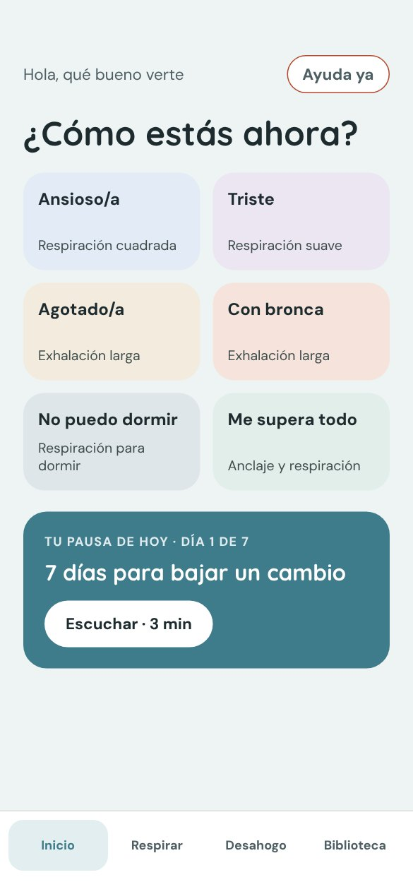
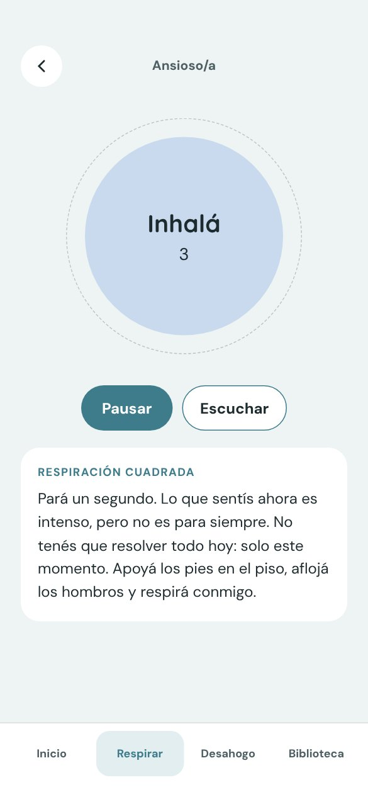
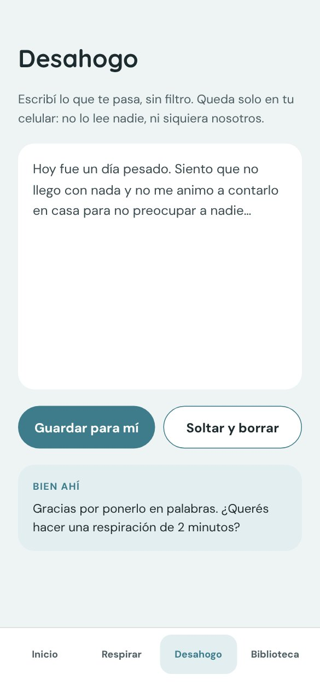
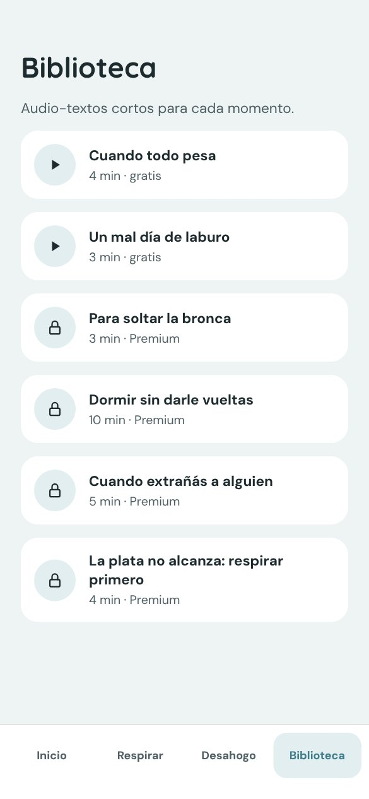

Manaio es un lugar para frenar, respirar y volver a vos. Respiraciones guiadas, audios cortos de calma con voz de acá y un espacio para desahogarte sin que nadie te juzgue.

En la lengua del pueblo maorí, de Nueva Zelanda, la palabra manawa quiere decir corazón, y también aliento. Y āio quiere decir calma, paz, como el mar cuando se aquieta.
Manaio nace de juntar esos dos sonidos. Es lo que buscamos que encuentres cada vez que la abrís: un poco de aire y un poco de calma.
Hay días que pesan. Días en que no sabés con quién hablar, o en que no te animás a contarle a alguien conocido lo que te pasa, por miedo a lo que piense.
Manaio está pensada para esos días. No para darte un sermón ni para reemplazar a nadie, sino para acompañarte como lo haría un amigo: sin juicio, a cualquier hora y con palabras que suenan a casa.
Elegís cómo estás ahora: ansioso, triste, agotado, con bronca o sin poder dormir.
Tres minutos de audio y respiración guiada, pensados para lo que estás sintiendo.
Seguís con tu día con un poco más de aire. Y si lo necesitás, soltás lo que te pasa en el Desahogo.
Manaio no es una palabra ni una app maorí: es un nombre inventado, nuestro homenaje al sonido de una lengua que habla de la calma y del aliento con mucha belleza.
Todos tenemos días difíciles. Lo que falta muchas veces no son las ganas de estar mejor, sino un momento y un lugar para hacerlo.
Contestás tres preguntas y Manaio arma tu plan de siete días. Después, la usás cuando la necesites.
Así va a ser Manaio por dentro: simple, tranquila y en castellano de acá. Son pantallas del prototipo; la app está en desarrollo.



Un audio corto y una respiración, pensados para lo que sentís en ese momento.
Respiración cuadrada, exhalación larga, 4-7-8 para dormir: con un círculo que te marca el ritmo.
Textos cálidos, en castellano rioplatense, para escuchar cuando la cabeza no para.
Escribís lo que te pasa, sin filtro. Lo guardás solo en tu celular o lo soltás y se borra.
Para bajar un cambio, dormir mejor, aquietar la cabeza o atravesar un momento difícil.
Un mensaje amable en el momento justo, para recordarte que no tenés que poder con todo.
Anotás cómo estás con un toque y ves cómo vas cambiando con los días.
Audios más lentos para soltar el día y dormir sin darle tantas vueltas.
Siempre a mano, con las líneas oficiales y gratuitas de Argentina para cuando es demasiado.
No. Manaio es un acompañamiento, como un amigo que está ahí cuando lo necesitás. No reemplaza a un profesional de la salud mental: si lo que te pasa dura mucho o te supera, te recomendamos consultar con uno.
Tocá el botón "Ayuda ya" o llamá ahora: 0800-999-0091 (línea nacional de urgencias en salud mental, gratis y las 24 horas), 135 desde CABA y Gran Buenos Aires, 0800 345 1435 desde el resto del país, o 911 si hay peligro inmediato.
No. Lo que escribís en el Desahogo queda guardado solo en tu celular, y lo podés borrar cuando quieras.
No. Podés usar Manaio sin dar tu nombre ni tu mail.
Todavía no está abierta al público. Va a tener una versión gratuita, con las respiraciones y el botón de ayuda, y una completa a un precio en pesos accesible. Escribinos y te avisamos cuando salga.
Sí. Se va a poder usar en Android, en iPhone y en la computadora.
Está inspirado en la lengua maorí: junta el sonido de "manawa", aliento, y "āio", calma. La historia completa está más arriba.
Estamos dando los últimos retoques. Dejanos tu WhatsApp y te avisamos apenas esté lista. Mientras tanto, date un respiro.